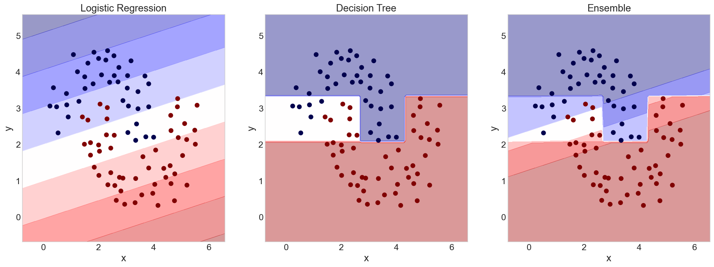

The Dark Forest
Jed Rembold
March 19, 2024
Announcements
- HW4 is due on Friday evening!
- Quiz 2 on Exoplanets and Galaxies on Thursday
- Progress on HW2 feedback continues. Last week was a week.
- Will start our final unit on Thursday
Recap
- For certain data, alternative models are necessary to capture relationships within the data
- Decision Trees are one alternative method of creating a classifier
model
- Comprised of a conditional tree of yes/no questions
- Each question attempts to minimize the resulting “impurity” of the classifications
- Utilizing a full decision tree will often overfit the data, and thus various parameters can be chosen to “prune” the tree
- Decision trees are unstable in that the resulting tree can heavily depend on the randomized initial training data
Discussing Today
- Feature importance
- Combining Models
- When and why might an ensemble of models give better results?
- How can we easily generate new “models”?
- Introducing and understanding random forest models
Feature Importance
It can be useful to get an idea of what features are most important in constructing the tree
Once the model has been fit, you can query the model to get this information:
tree.feature_importances_This returns a list of relative importance for each feature, in the same order as the features you passed into the model originally
In R you need the
viplibrarylibrary(vip) vip(tree_fit)
Why Ensembles?
- Ensembles leverage the idea that many efforts trying to get the right answer will be off in a random way
- This is in fact what the Galaxy Zoo project does!
- Most volunteers are not experts, and will make mistakes from time to time
- But the mistakes will be random, and thus averaging them will get close to the correct answer
- You can actually do this with any machine learning model
Voting Classifiers
You can construct your own arbitrary ensembles
In Python:
combo = VotingClassifier( [ ('logreg',log_mod), # first model ('dec_tree',tree) # second model ], voting='soft') combo.fit(training_df[['x','y']])I haven’t yet found an equivalent in R, but I’d imagine it is out there
Gerrymandering (Voting Boundaries)

Creating Model Variations
- Changing the
random_statewon’t always generate a very different model- And in some cases, like logistic regression, there is no random element
- A better way is using bagging (Bootstrap Aggregation)
- In SkLearn as
BaggingClassifier - In R from
baguettelibrary
Bias and Variance

Applications to Ensembles
- The ability of an ensemble of classifiers to generalize depends on:
- The strength of the individual classifiers (how well does each individual model do at predicting a class?)
- The inverse correlation of the models
- 100 of essentially the same model isn’t going to gain you anything in the averaging
- The most distinct the models are in their own unique errors, the better the ensemble will operate
- Often worth making an individual model worse if it uncorrelates the ensemble models
Building a Forest
Randomizing Trees
- Random forests are created by randomizing each tree in two ways:
- Bagging the training data for each tree
- For each split, picking a random subset of features to use
- More trees are always better, but will slow training
Creating a Random Forest
In Python, random forest models come from the Scikit-learn
ensemblemodulefrom sklearn.ensemble import RandomForestClassifier forest = RandomForestClassifier()In R, they are one of Parsnips available models
forest <- rand_forest(mode="classification")Fitting, computing confusion matrices, visualizing classification boundaries, etc. proceed exactly as they have for other models
Tuning Forests (Python)
- How many trees in the forest?
n_estimators(default=100)
- Main tuning parameter:
max_features- Determines how many features to keep at each split
- For classification, using about \(\sqrt{\text{n_features}}\) is best, and this is the default
- Tree pre-pruning can still help!
- If nothing else with model size and training time
- Still
max_depth,max_leaf_nodes, etc.
Tuning Forests (R)
- How many trees in the forest?
trees(default=100)
- Main tuning parameter:
mtry- Determines how many features to keep at each split
- Tree pre-pruning can still help!
min_nis the minimum number of points still in a node to be split further
Warming Up
- More trees is always better, but at a cost to time
- How many trees get you the most “bang for your (time) buck”?
- Sklearn’s
warm_startoption lets you resume from last training point
Activity
- Taking the same dataset from before (here!) build a classifier using a random forest
- For several sizes of forest and pre-pruning parameters, create a forest and then compare its confusion matrix to the others.
- If you have a time, see if you can determine the least number of trees you need while still maximizing your model’s effectiveness.
HW4 Working Time!
- I’ve set aside the rest of class for you to touch base/work with your partner(s) on HW4
- Ensure you are on track to finish by the end of Friday!
- What questions do you have? Discuss them with your partner, and then potentially myself